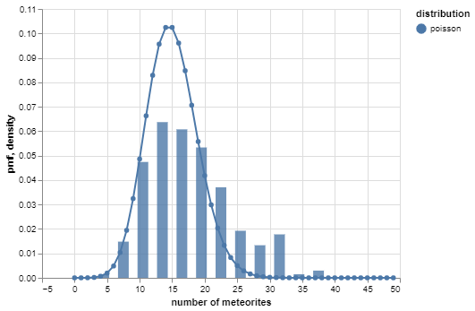
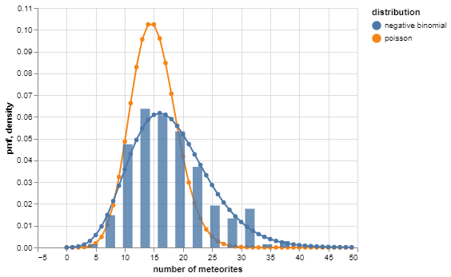
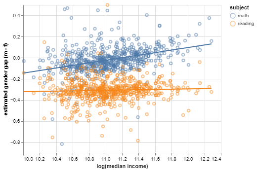
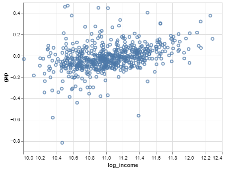
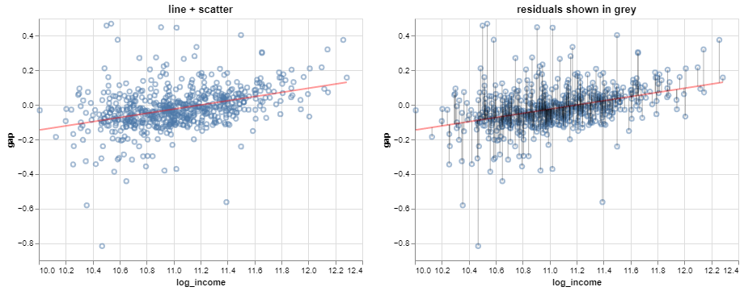

Code
| log_income | gap | |
|---|---|---|
| id | ||
| 600001 | 11.392048 | -0.562855 |
| 600006 | 11.607236 | 0.061163 |
| 600011 | 10.704570 | -0.015417 |
Invalid Date
A model is an idealized representation of a system. You likely use models every day. For instance, a weather forecast is [based on] a model.
In the context of quantitative methods a model is typically a mathematical representation of some system.
Quick discussion:
One straightforward view is that a statistical model is simply a probabilistic representation of a data-generating process. In other words, a probability distribution.
For a probability distribution to provide a sensible description of a data generating process:
That’s why sampling is so important to statisticians. Probabilistic sampling ensures:
Suppose you have a dataset comprising the number of meteorites that hit earth on each of 225 days. A very simple model is that the counts are independent Poisson random variables.

However, the negative binomial distribution provides a better ‘fit’:
A good description of a data-generating process usually captures two aspects of a system:
the deterministic aspects, allowing one to identify structure in the data; and
the random aspects or ‘noise’, allowing one to quantify uncertainty.
In our toy example, the better model captured both the most common value (a kind of structure) and the variation (noise).
Models serve one of three main purposes:
Prediction: predict new data before it is observed.
Inference: make conclusions about a larger population than the observed data.
Description: less common, but sometimes models provide a convenient description of observed data.
We probably wouldn’t use a univariate model to make specific predictions, but we could for instance estimate the probability that over 40 meteorites (rarely observed) hit earth any given day.
The exploratory analysis techniques you’ve seen are actually very flexible models often used for descriptive purposes.
Kernel density estimates are models for univariate data
LOESS curves are models for trends in bivariate data
Principal components are models for correlation structures
It’s a little tricky to see, but these correspond to classes of probability distributions rather than specific ones. That’s why they’re so flexible.
There are a lot of situations when modeling simply isn’t appropriate or feasible.
Sketchy sampling: every statistical model makes some assumptions about the data collection process. These don’t always need to hold exactly, but models could be untenable if:
Sparse data: model fitting is sensitive to the specific dataset observed, and may be unreliable if it’s too sensitive. This commonly arises when:
These univariate models usually don’t occur to us as models in the fullest sense, because:
For this reason you can’t do much with them, so they seem a bit uninteresting.
Many models also involve an interesting deterministic component.
A frequent strategy is to form a regression model:
For instance:
A linear regression model is one in which the deterministic component is linear: the mean of a variable of interest is a linear function of one or more other variables.
For instance:
You may not have realized it at the time, but those lines are simple linear regression models: they describe the mean gaps as linear functions of log median income.
A linear regression model is simple if it involves only one variable of interest \(Y\) and one additional variable \(X\)
The multiple linear regression model involves multiple explanatory variables \(X_1, X_2, \dots\)
Multivariate linear regression models involve multiple responses \(Y_1, Y_2, \dots\)
“Linear regression model” is usually taken to mean a model in which \(Y\) is assumed to be normal, given \(X\)
Linear models can be used for prediction, inference, or both.
Predict the gender achievement gaps for a new district based on median income in the district.
Quantify the association between median income and achievement gaps.
We’re going to talk in detail about the model itself:
Let’s first introduce the kind of data that the simple linear model describes.
There are two variables, \(X\) and \(Y\).
The data values are \(n\) observations of these two variables: \[ (x_1, y_1), \dots, (x_n, y_n) \]
The notation in tuples indicates the pairing of the values when measured on the same observational unit. If it helps, think of them as rows of an \(n\times 2\) dataframe:
| \(X\) | \(Y\) |
|---|---|
| \(x_1\) | \(y_1\) |
| \(x_2\) | \(y_2\) |
| \(\vdots\) | \(\vdots\) |
| \(x_n\) | \(y_n\) |
The notation above is just a mathematical description of data that looks like this:
In our notation, \(X\) would represent log median income, and \(Y\) would represent the math gap.
The example SEDA data in tabular form are:
| log_income | gap | |
|---|---|---|
| id | ||
| 600001 | 11.392048 | -0.562855 |
| 600006 | 11.607236 | 0.061163 |
| 600011 | 10.704570 | -0.015417 |
The tuples would be: \[ (\text{log_income}_1, \text{gap}_1)\;,\; (\text{log_income}_2, \text{gap}_2)\;,\; \dots\;,\; (\text{log_income}_{625}, \text{gap}_{625}) \]
Or more specifically: \[ (11.392, -0.563)\;,\; (11.607, 0.061)\;,\; \dots\;,\; (11.229, -0.040) \]
A line in slope-intercept form is given by the equation: \[ y = ax + b \]
Data values never fall exactly on a line. So in general for every \(a, b\): \[ y_i \neq a x_i + b \]
But we can describe any dataset as a line and a ‘residual’: \[ y_i = \underbrace{a x_i + b}_\text{line} \underbrace{+\;e_i}_\text{residual} \]
Here’s a picture:
Each residual is simply the vertical distance of a value of \(Y\) from the line: \[ \color{grey}{e_i} = \color{blue}{y_i} - \color{red}{(a x_i + b)} \]
This makes it possible to express \(Y\) as a linear function of \(X\).
However, the mathematical description is somewhat tautological, since for any \(a, b\), there are residuals \(e_1, \dots, e_n\) such that \[ y_i = a x_i + b + e_i \]
In other words, there are infinitely many possible lines. So which values of \(a\) and \(b\) should be chosen for a given set of data values?
A sensible criterion is to find the line for which:
If \(\bar{e} = 0\), then the residual variance is proportional to the sum of squared residuals: \[ \frac{1}{n - 1}\sum_{i = 1}^n (e_i - \bar{e})^2 = \frac{1}{n - 1}\sum_{i = 1}^n e_i^2 \]
So the values of \(a, b\) that minimize \(\sum_i e_i\) give the ‘best’ line (in one sense of the word ‘best’). This method is known as least squares. \[ (a^*, b^*) = \arg\min_{(a, b)}\left\{\sum_{i = 1}^n \underbrace{\left(y_i - (a x_i + b)\right)^2}_{e_i^2}\right\} \]
Let’s try doing the derivation using univariate calculus. Note: \(e_i = y_i - a - b x_i\).
\[ \frac{d}{da} \sum_i e_i^2 = \cdots \hskip{7in} \]
\[ \frac{d}{db} \sum_i e_i^2 = \cdots \hskip{7in} \]
If \(\frac{d}{da} \sum_i e_i^2 = 0\) and \(\frac{d}{db} \sum_i e_i^2 = 0\) then…
Alternatively, the model can be written in matrix form as \(\mathbf{y} = \mathbf{Xa} + \mathbf{e}\), where:
\[ \underbrace{\left[\begin{array}{c} y_1 \\\vdots\\ y_n \end{array}\right]}_{\mathbf{y}} = \underbrace{\left[\begin{array}{cc} 1 & x_1 \\ \vdots & \vdots \\ 1 & x_n \end{array}\right]}_{\mathbf{X}} \underbrace{\left[\begin{array}{c} a \\ b \end{array}\right]}_{\mathbf{a}} + \underbrace{\left[\begin{array}{c} e_1 \\\vdots\\ e_n \end{array}\right]}_{\mathbf{e}} \]
Then, the sum of squared residuals is: \[ \mathbf{e'e} = (\mathbf{y} - \mathbf{Xa})'(\mathbf{y} - \mathbf{Xa}) \]
Using vector calculus, one can show that: \[ \nabla_\mathbf{a} \mathbf{e'e} = 0 \quad\Longrightarrow\quad 2\mathbf{X'y} = 2\mathbf{X'Xa} \quad\Longrightarrow\quad \mathbf{a} = (\mathbf{X'X})^{-1}\mathbf{X'y} \] And that this is a minimum.
The solution \(\mathbf{a} = (\mathbf{X'X})^{-1}\mathbf{X'y}\) is known as the ordinarly least squares (OLS) estimate.
The sklearn implementation looks like this:
# save explanatory variable and response variable separately as arrays
x = regdata.log_income.values[:, np.newaxis]
y = regdata.gap.values
# configure regression module and fit model
slr = LinearRegression()
slr.fit(x, y)
# store estimates
print('slope: ', slr.coef_[0])
print('intercept: ', slr.intercept_)slope: 0.12105696076155249
intercept: -1.3561699570330037The solution \(\mathbf{a} = (\mathbf{X'X})^{-1}\mathbf{X'y}\) is known as the ordinarly least squares (OLS) estimate.
The statsmodels implementation looks like this:
# add a column of ones (intercept)
x_aug = sm.tools.add_constant(x)
# fit model
slr = sm.OLS(endog = y, exog = x_aug)
slr_fit = slr.fit()
# return estimates
print('estimates: ', slr_fit.params)estimates: [-1.35616996 0.12105696]Note a constant has to be added to x. Why?
Alternatively, statsmodels also has a wrapper around sm.OLS that allows models to be fit based on a dataframe and column names (much like lm() in R):
We can check the calculations by computing the closed-form expression:
# ols solution, by hand
x_mx = np.vstack([np.repeat(1, len(x)), x[:, 0]]).transpose() # X
xtx = x_mx.transpose().dot(x_mx) # X'X
xtx_inv = np.linalg.inv(xtx) # (X'X)^{-1}
xtx_inv.dot(x_mx.transpose()).dot(y) # (X'X)^{-1} X'yarray([-1.35616996, 0.12105696])